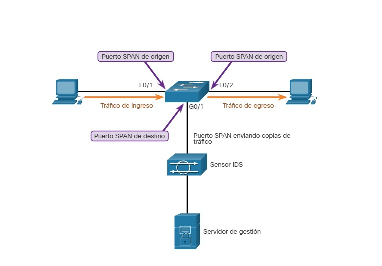

15.1.1 Topología de seguridad de la red
“Todas las redes son objetivos” es una frase común para describir el panorama actual de la seguridad de la red. Por lo tanto, para mitigar las amenazas, todas las redes deben de ser aseguradas y protegidas de la mejor manera.
Esto exige un enfoque de defensa en profundidad Por lo tanto, requiere el uso de métodos comprobados y una infraestructura de seguridad constituida de firewalls, Sistema de Detección de Intrusiones (IDS, siglas en inglés), Sistema de Prevención de Intrusiones (IPS, siglas en inglés), y software de seguridad de punto terminal (endpoint security). Estos métodos y tecnologías se utilizan para automatizar el monitoreo en la red, crear alertas de seguridad o incluso bloquear automáticamente dispositivos ofensivos cuando algo sale mal.
Sin embargo, para redes grandes, debe añadirse una capa adicional de protección. Dispositivos como firewalls e IPS funcionan según las reglas pre-configuradas. Monitorean el tráfico y lo comparan con las reglas configuradas. Si hay una coincidencia, el tráfico se maneja según la regla. Esto funciona relativamente sin problemas. Sin embargo, algunas veces el tráfico legítimo es confundido con el tráfico no autorizado. Estas situaciones reciben el nombre de “falsos positivos” y requieren intervención humana para verlas y evaluarlas antes de poder validarlas.
Una parte importante del trabajo del analista de ciberseguridad es revisar todas las alertas generadas por dispositivos de red y determinar la validez de las mismas. ¿Verdaderamente el archivo que fue descargado por X usuario era malware? ¿Verdaderamente el sitio que fue visitado por Y usuario era malicioso? ¿Verdaderamente la impresora del tercer piso está en peligro debido a que intentó conectarse a un servidor externo que se encuentra en Internet? Estas son algunas preguntas comunes que los analistas de seguridad se realizan todos los días. Es su trabajo determinar las respuestas correctas.
15.1.2 Métodos de monitoreo de la red
El funcionamiento diario de una red se compone de patrones comunes de flujo de tráfico, uso de ancho de banda y acceso a los recursos. Juntos, estos patrones identifican el comportamiento normal de una red. Los analistas de seguridad deben estar muy familiarizados con el comportamiento normal de las redes, ya que el comportamiento anormal suele ser indicio de problemas.
Para determinar el comportamiento normal de una red, el monitoreo de red debe de ser implementado. Se utilizan diversas herramientas para ayudar a detectar el comportamiento normal de la red, por ejemplo, IDS, los analizadores de paquetes, SNMP y NetFlow.
Algunas de estas herramientas requieren datos de red capturados. Hay dos métodos comunes utilizados para capturar tráfico y enviarlo los dispositivos de monitoreo de red:
15.1.3 Taps de red
Un tap de red suele ser un dispositivo de división pasiva implementado en el cableado de la red, entre un dispositivo de interés y la red. Un tap reenvía todo el tráfico, incluidos los errores de capa física, a un dispositivo de análisis, al tiempo que permite que el tráfico llegue a su destino previsto.
En la figura, se ve un ejemplo de una topología con un tap instalado entre un firewall de red y el router interno.

Observe cómo el tap envía simultáneamente el flujo de datos de transmisión (TX) del router interno y el flujo de datos de recepción (RX) al router interno en canales separados y exclusivos. Esto garantiza que todos los datos lleguen al dispositivo de monitoreo en tiempo real. Por lo tanto, monitorear la conexión no afecta ni reduce el desempeño de la red.
Los taps también son a prueba de fallos, lo que significa que el tráfico entre el firewall y el router interno no se ve afectado.
Para más información realizar una búsqueda en internet en "NetScout", de Taps para ethernet UTP de cobre, ethernet de fibra, y enlaces seriales."
15.1.4 Duplicación de tráfico y SPAN
Los switches de red segmentan el diseño de red. Esto limita la cantidad de tráfico visible para los dispositivos de monitoreo de red. Debido a que la captura de datos por monitoreo requiere que todo el tráfico sea capturado, deben emplearse técnicas especiales para evitar la segmentación de la red impuesta por los switches de red. La duplicación de puertos es una de estas técnicas. Compatible con muchos switches empresariales, la duplicación de puertos permite que un switch copie tramas que son recibidas de uno o varios puertos en un puerto "Switched Port Analyzer" (SPAN) conectado a un dispositivo de análisis.
La tabla identifica y describe la terminología de la función SPAN
| Terminología SPAN | Descripción |
|---|---|
| Tráfico de ingreso | Tráfico que ingresa |
| Tráfico de egreso | Tráfico que sale del switch |
| Puerto (SPAN) de origen | Los puentes de origen se monitorean a medida que el tráfico que ingresa en ellos se duplica (refleja) en los puertos de |
| Puerto (SPAN) de destino | Un puerto que refleja los puertos de origen. Los puertos SPAN de destino suelen conectarse a dispositivos de análisis, como un analizador de paquetes |
La figura muestra un switch que interconecta dos hosts y refleja el tráfico con un dispostitivo IDS y un servidor de gestión de red.
SPAN

El switch reenvía el tráfico de ingreso en el F0/1 y el tráfico que egreso en el F0/2 hacia el puerto SPAN de destino en G0/1 el cual se conecta a un IDS.
La asociación entre los puertos de origen y un puerto de destino recibe el nombre de sesión de SPAN. En una sola sesión, es posible monitorear uno o varios puertos. En algunos switches Cisco, el tráfico de la sesión se puede copiar a más de un puerto de destino. Otra opción es especificar una VLAN de origen en la que todos los puertos de la VLAN de origen se conviertan en fuentes de tráfico de SPAN. Cada sesión de SPAN puede tener puertos o VLAN como orígenes, pero no ambas opciones.
Nota: Existe una variación de SPAN con el nombre de Remote SPAN (RSPAN) que permite que un administrador de red utilice la flexibilidad de las VLAN para monitorear el tráfico en switches remotos.